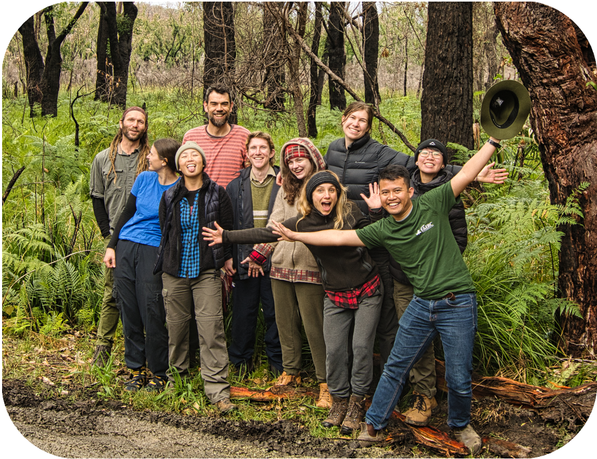
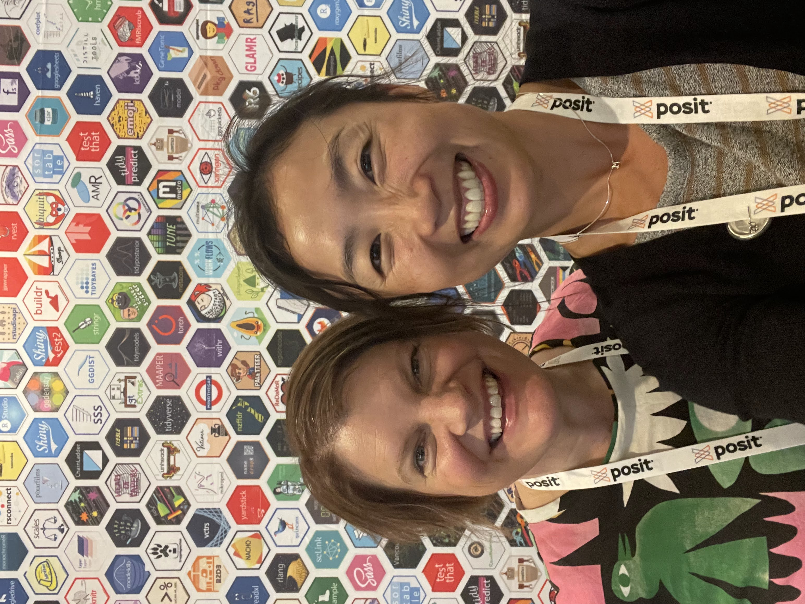
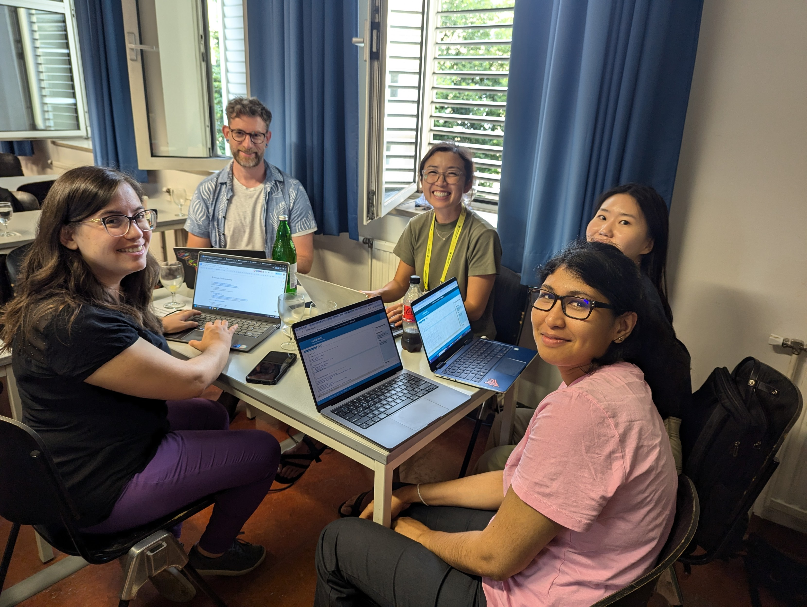
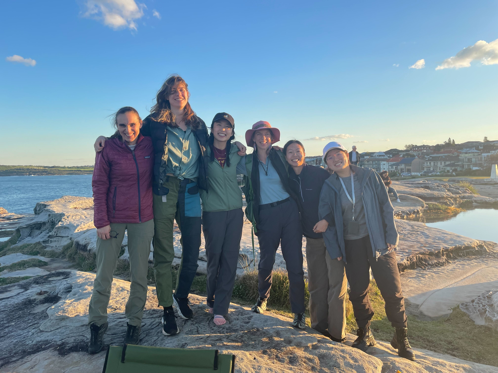

An ode to the forest
In the flurry of fixed termed contracts, close-knit teams and solving problems together, something magical happens 💫

Last week, I packed up my desk at UNSW - my stomping grounds since 2016. I have been working here for the past four years and before that, I was doing my PhD in Evolutionary Biology. Despite being an infrequent blogger, I want to spend a few moments celebrating this chapter and reflecting on my experiences.
I joined the Falster Lab right out of my PhD when the world was still quite uncertain and very much confined by COVID-19. I came out of my candidature feeling a bit jaded, lost and unsure what I wanted to do next. I was particularly excited about this role because it was different to anything I’ve done in that it was all R programming. My job was to build R packages with researchers to best practices and share knowledge on how to build/maintain their software. I thought this was really cool, I’ve always had an inordinate fondness for R programming and this felt like an opportunity to see where it would take me. 👩💻
In the beginning, I didn’t really know what to call myself. A postdoc? A research software engineer? A data scientist? These days, I care less about my title and focus on what I do, which is somewhere between “I build things in R”, “I like making research go smoothly” and “I’m a big fan of open source”. 🙋♀️
Over the past four years, I got to work with a lot of academics from various habitats. Ranging from Psychology, Astrophysics, Climate Science to Ecology. Academics are a unique and delightful species. They are contagiously passionate, meticulous and highly competent. It may be difficult to spot them in the wild, but when you have their full attention, they are incredibly effective and wonderful collaborators.
AusTraits tools

I worked with a close knit team of plant ecologists on several projects that I’ve very proud of. I took the lead with maintaining the {austraits} R package. Our team wanted to create a nice experience for an R user to access the Australian Plant Traits database and easily extract the relevant bits of it for their own use. This was a fun project, it taught me a lot about unit testing across an evolving dataset. A lot of our functions were strongly inspired by {dplyr} but with a giant list object. I was thrilled for our work to be recognised by the ESA New Open Source Developer award too.
One challenge for the {austraits} project was the need for out-of-the-box solutions for databases created with the {traits.build} workflow. This was a big undertaking, we had to think carefully about which functions should live where and refactored code for greater flexibility and performance. This process taught me a lot about reexporting functions, creating beautiful messaging with {cli} and using dplyr::semi_join() which I like to think of it as a cookie-cutter for tabular data 🍪

The AusTraits project had fantastic reception at ESA conferences. Our cheatsheet for {austraits} and other packages flew off the table! One piece of feedback we consistently received was the need for a more accessible way to explore the database sans code. Over the past couple of months, our team had a lot of fun dreaming and creating a web interface to the AusTraits database. With my limited Shiny experience, I learned a lot more about declarative programming and leveraging LLM such as Shiny assistant to help the team build our first prototype. It is very much a work-in-progress but its been incredibly satisfying experience.
Working with big biodiversity data
With my background working with Atlas of Living Australia - a biodiversity data aggregator (I like to call it the Google Maps for Australian flora and fauna), I was naturally drawn to projects that involved biodiversity/citizen science data 🗺️🦋🐸🌲
One problem I helped solve was to create {APCalign}, an R package that tracked the changes in plant names (i.e. taxonomy) and update them accordingly if they are out-of-date. This project was different in that we decided it might also be fun to try out some principles from SCRUM over the course of a month or so . I gotta say, SCRUM was bit strange at first. Academic teams don’t map neatly to all the different roles of SCRUM but we did our best and often wore multiple hats. Spending a disproportionate time on careful sprint planning was an adjustment…if there is one thing you need to know about academics is that we tend to be meetings-adverse. We rather be doing the thing, rather than talking about the thing, however by the end month, we were very impressed how much we achieved. Tasks were ticked off as fast as they were being created. By planning and divvying up tasks together, the team was on the same page and had a very clear idea on implementation and didn’t need to a lot of back and forth. This project taught me the value of being in sync and having open communication with your team and the art of failing gracefully when APIs were down (still trying to refine this one!). 😅
Have you ever been to a new place and thought, “Gee I wonder what sort of plants/bird/[insert your favourite taxonomic group here] I can find here?” 🔍 I worked with two keen ecologists and prolific iNaturalists to try solve this problem. We created {infinitylists}l a tool to equip users with a curated list of organisms that you expected to encounter for a given area. The visionary of the project, Thomas Mesaglio, had field tested a number of exisiting tools and all of them fell short in some way. This meant that our team had a very a clear picture of we wanted to build. This was my first time creating a Shiny app that worked with large amounts of data. I learned to harness the power of Apache parquets to quickly load data for a specific location without compromising on reactive magic
Whale of a time
Creating research tools were one of the many highlights, there were other experiences that were worthy of mentioning!

I attended rstudio::global(2021) when I started my job and I couldn’t help feeling over my head. Fast forward to having my talk get accepted for posit::conf(2023) was a major WTF-OMG-is-this-really-happening moment. I was not sure what I wanted to share was worthwhile to a data science audience but was glad to have the opportunity speak about my experience on learning how to write R packages. It was such a valuable experience to go through speaker training and to sharpen my story and finally tell my story virtually. It made me realise, that all achievements should celebrated. I was lucky enough to attend posit::conf(2024) in person as an Opportunity Scholar and connect with new data science heroes and expand my nerdy love for R, Quarto and data science.
Attending useR!2024 was a dream! I couldn’t believe my love for R programming led me to Austria. I had never really comprehended how widely usedR was until this conference (Big pharma…wut!)! I fangirled over the keynote speakers like Maëlle Salmon, Kelly Bodwin and Hilary Parker.I presented a lightning talk about the importance of being silly and explorative when learning new R skills. A really memorable part of this experience was taking part of R Dev Day. Having zero C programming experience, I was there to learn and try be helpful. I ending up working making the R manuals prettier with CSS (also something I didn’t know much about).

Following on from useR! I was invited to give an extended version of my lightning talk at WOMBAT (Workshop Organised by the Monash Business Analytics Team) and to take part in OceaniaR - a regional hackathon for Australia, New Zealand and Pacific Island communities. It was tricky to expand on my simple idea, but it all worked out in the end and I got to celebrate the creativity of the wider data science community. I loved the small format of WOMBAT - workshops preceded the single stream of talks spanning over two days. By the end of the workshop, everyone was well acquainted with each other and were eager to stay in touch.
What’s next?

All in all, the past four years has been a wonderful and formative journey. Taking pivots in your career path can be scary, but it is less scary if you do it people that support you through the process. My heart is teaming with gratitude for the folks at the “Cornster” Lab. Everyone is so devoted in making a contribution to the world while celebrating each others wins. A big shout out to Daniel Falster, for his never-ending mentorship and gentle reminders to see the forest for the trees. Its always bittersweet to say good bye but this is the familiar dance of academia. In the flurry of fixed termed contracts, close-knit teams and solving problems together, something magical happens.
I am excited for this next chapter at the Biological Data Science Institute, Australian National University working with Emi Tanaka on the Analytics for Australia Grains Industry 🌾 project. I’ve always had three parallel loves; biology, R programming and statistics and I’m excited to foster my curiosity in the latter and see where it leads me. Onwards my friends! 🚀